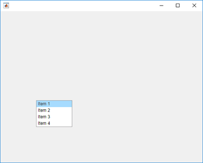
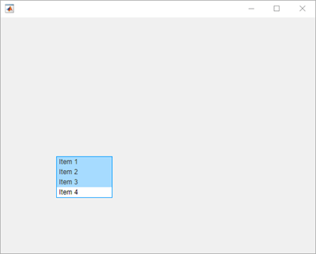
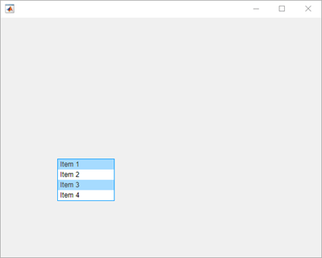

choose
Class: matlab.uitest.TestCase
Namespace: matlab.uitest
Perform choose gesture on UI component
Syntax
Description
choose(
performs a choose gesture on a UI component that does not require additional
information, such as a tab or a tree node. For example, use this syntax to
choose a specific tab, but use the previous syntax to choose a particular tab
from a tab group.testCase,compNoOpts)
Input Arguments
Examples
Create a discrete knob.
knob = uiknob('discrete');
Create an interactive test case and choose the 'High' knob value. An animated blue dot performs the programmatic choose gesture.
tc = matlab.uitest.TestCase.forInteractiveUse;
tc.choose(knob,'High')
View the value of the Items property on the knob.
knob.Items
ans =
1×4 cell array
{'Off'} {'Low'} {'Medium'} {'High'}Choose the 'Low' knob value by index. The knob moves from 'High' to 'Low'.
tc.choose(knob,2)

Create a list box and enable multiple node selection.
listbox = uilistbox('Multiselect','on')
listbox =
ListBox (Item 1) with properties:
Value: {'Item 1'}
Items: {'Item 1' 'Item 2' 'Item 3' 'Item 4'}
ItemsData: []
Multiselect: 'on'
ValueChangedFcn: ''
Position: [100 100 100 74]
Show all properties
Create an interactive test case and choose items 1 through 3.
tc = matlab.uitest.TestCase.forInteractiveUse; tc.choose(listbox,1:3)

Choose items 1 and 3 using the values of the Items
property.
tc.choose(listbox,{'Item 1','Item 3'})
Create a slider.
s = uislider;
Create an interactive test case and verify that the value of the slider
button is 0.
tc = matlab.uitest.TestCase.forInteractiveUse; tc.verifyEqual(s.Value,0)
Verification passed.
Choose a new slider value and verify the slider value changes. Since the framework mimics a user manipulating the component to an arbitrarily precisioned value, it is a best practice to use a tolerance to compare the actual and expected slider values.
expVal = 42;
tc.choose(s,expVal)
tc.verifyEqual(s.Value,expVal,'AbsTol',0.1)Verification passed.
Create a figure with two tabs.
fig = uifigure; group = uitabgroup(fig); tab1 = uitab(group,'Title','Tab #1'); tab2 = uitab(group,'Title','Tab #2');
Create an interactive test case and verify that the selected tab title
contains the substring '#1'.
tc = matlab.uitest.TestCase.forInteractiveUse;
tc.verifySubstring(group.SelectedTab.Title,'#1')verification passed.
Choose tab 2 and verify that the selected tab changes.
tc.choose(group,'Tab #2')
tc.verifyEqual(group.SelectedTab,tab2)Verification passed.
Create a table UI component that contains text and logical values.
name = {'Smith'; 'Chang'; 'Green'};
address = { ...
sprintf('456 Elm Avenue\nApt. 789\nNew York, NY 67890'); ...
sprintf('123 Maple Street\nBoston, MA 12345'); ...
sprintf('789 Oak Lane\nLos Angeles, CA 23456')};
eligibility = {true; true; false};
fig = uifigure;
uit = uitable( ...
Parent=fig, ...
Position=[20 20 400 200], ...
Data=[name address eligibility], ...
ColumnName=["Last Name" "Address" "Eligible"], ...
ColumnEditable=[false false true]);
Create a test case for interactive testing and choose the table cell with indices (2,2). The choose method makes a selection by pressing at the center of the cell.
testCase = matlab.uitest.TestCase.forInteractiveUse; testCase.choose(uit,[2 2])

Clear the check box in the table cell with indices (1,3) by choosing that cell. Because the specified table cell contains a logical value, the choose method interacts with the check box instead of pressing at the center of the cell.
testCase.choose(uit,[1 3])

Create a table UI component that displays a 10-by-3 array of random integers.
fig = uifigure;
uit = uitable(fig,'Data',randi(100,10,3));Create an interactive test case and choose the cells with indices (1,1) and (3,3).
tc = matlab.uitest.TestCase.forInteractiveUse; tc.choose(uit,[1 1; 3 3],'SelectionMode','discontiguous')

Now, choose the cells with indices (1,1) and (3,3) and all cells in between these cells.
tc.choose(uit,[1 1; 3 3],'SelectionMode','contiguous')